Automatic Differentiation, Differentiable Programming, and Scientific Machine Learning
John Waczak
September 17, 2021
GSP
Outline
-
Automatic Differentiation (Autograd)
Analytic differentiation, numerical differentiation, dual numbers, forward mode AD, computational graphs, reverse mode AD, static graph vs backpropagation
-
Differentiable Programming (\(\partial P\))
Language wide AD as a programming paradigm, my pitch for Julia, demos: crappy sine function implementation
-
Scientific Machine Learning (SciML)
What is a NN really?, NN from scratch, physics informed NNs, Neural ODEs and autograd through DiffEqs, UDEs, SINDy and sparse regression, Fun example: Hamiltonian NNs
Differentiation Techniques
Analytic differentiation is nice but often nasty
$$f'(x) = \lim_{\epsilon\to 0} \frac{f(x+\epsilon)-f(x)}{\epsilon}$$
To make things easier, we can derive a set of algebraic rules for derivatives
$$\frac{d}{dx} c f(x) = c\cdot f'(x) $$
$$\frac{d}{dx}\left(f(x)+g(x)\right) = f'(x) + g'(x) $$
$$\frac{d}{dx}f(x)g(x) = f'(x)g(x) + f(x)g'(x) $$
$$\frac{d}{dx}f(g(x)) = f'(g(x))\cdot g'(x) $$
$$\frac{d}{dx} x^a = ax^{a-1}$$
$$\frac{d}{dx}e^x = e^x$$
$$\frac{d}{dx}\sin(x) = \cos(x)$$
$$\frac{d}{dx}\cos(x) = -\sin(x)$$
What do you do if you're given data and not functions?
Numerical Differentiation
Forward Difference: $$\Delta_F f(x) = f(x+\Delta x)-f(x) $$
Backward Difference: $$\Delta_B f(x) = f(x)-f(x-\Delta x) $$
Central Difference: $$\Delta_C f(x) = f(x+\Delta x/2)-f(x-\Delta x/2) $$
$$ \vdots $$
Adaptive step size, Runge-Kutta, etc...
These methods are great but their accuracy is limited by
The resolution of our data (i.e. what is \(\Delta t\))
and
The order of our method, i.e. \(\mathcal{O}(1), \mathcal{O}(2), \mathcal{O}(3), \mathcal{O}(4),\) etc...
Can we do better?
The best of both worlds:
Dual Numbers and Automatic Differentiation
A Motivating Example: Differentiation Over \(\mathbb{C}\) Valued Functions
A Motivating Example: Differentiation Over \(\mathbb{C}\) Valued Functions
Consider a \(\mathbb{C}\)-valued function
$$f(x+i\delta)$$
If it's analytic (a strong requirement), then we can expand:
$$f(x+i\delta) = f(x) + if'(x)\delta + \mathcal{O}(\delta^2)$$
so that...
$$if'(x) = \frac{f(x+i\delta) - f(x)}{\delta} + \mathcal{O}(\delta)$$
which leads to the astonishing result
$$f'(x) \equiv \frac{\text{Im}(f(x+i\delta))}{\delta}+\mathcal{O}(\delta)$$
The imaginary part keeps track of the derivative!
Complex numbers are a subset of (pseudo) number fields called Hypercomplex Numbers
These are numbers of the form \(a+\epsilon b\) where \(\epsilon\) satisfies one of 3 possibilities:
Complex Numbers:
\(\epsilon^2=-1\)
Dual Numbers:
\(\epsilon^2=0\)
Split Complex Numbers:
\(\epsilon^2=1\)
How does this work with functions of dual numbers? Again, use a Taylor Expansion
$$f(x+\epsilon) = f(x) + f'(x)\epsilon + \cancel{\frac{f''(x)}{2}\epsilon^2 + \cdots} $$
since \(\epsilon^2=0\).
This leads to the astonishingly usefull result. For the unital algebra of dual numbers:
$$\boxed{f(x+\epsilon) = f(x) + f'(x)\epsilon} $$
If we can create a numeric type for dual numbers, we can automatically determine the derivative when we evaluate a function.
We can now use the best of both worlds of analytic differentiation and numerical methods
Let's define how the algebra of dual numbers behaves. let \(f(x)\) and \(g(x)\) be two functions. Then,
Sum rule: \( (f+g)(x+\epsilon) = [f(x)+g(x)] + \epsilon[f'(x)+g'(x)] \)
Product rule: \( (f\cdot g)(x+\epsilon) = [f(x)\cdot g(x)] + \epsilon[f(x)\cdot g'(x) + g(x)\cdot f'(x)]\)
And that's all we need!
This is easy enough to turn into code
Dual Numbers in code
Define a new data structure for dual numbers
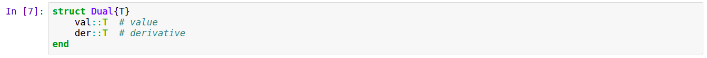
Define dispatches for standard arithmetic operations
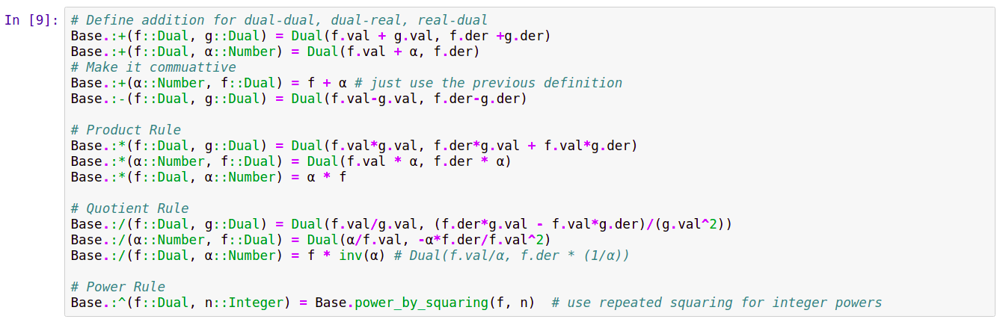
Define primitives for functions with known analytic derivatives
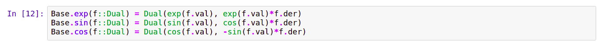
We can easily extend this to higher dimensions. Let \( f:\mathbb{R}^n\to\mathbb{R} \) and define \(\vec{\epsilon} := (\epsilon_1,...,\epsilon_n) \), then
$$ f(\vec{x}+\vec{\epsilon}) := f(\vec{x}) +\nabla f(\vec{x})\cdot \vec{\epsilon} $$
which behaves as desired with properties:
\begin{align}
(f+g)(\vec{x}+\vec{\epsilon}) &= [f(\vec{x})+g(\vec{x})] + [\nabla f(\vec{x}) + \nabla g(\vec{x})]\cdot \vec{\epsilon} \\ \\
(f\cdot g)(\vec{x}+\vec{\epsilon}) &= f(\vec{x})g(\vec{x}) + [f(\vec{x})\nabla g(\vec{x}) + g(\vec{x})\nabla f(\vec{x})]\cdot \vec{\epsilon}
\end{align}
with the stipulation that \( \epsilon_i\epsilon_j = 0 \). For full generality, we can find the jacobian of a function \( f:\mathbb{R}^n\to\mathbb{R}^m \) by applying the above to each component function \(f_i(\vec{x})\) with \(i\in \{1,...,m\} \)
This method of passing derivatives through nested multivariable functions is called Forward Mode Automatic Differentiation
Computational Graphs and
Reverse Mode Automatic Differentiation
Forward Mode AD works well, but quickly becomes computationally expensive.
What do you do if your model has thousands of functions with hundreds of thousands of tunable parameters?
The Chain Rule Revisited
Suppose we have a function \( f(x(t), y(t)) \), then
$$\frac{df}{dt} = \frac{df}{dx}\frac{dx}{dt} + \frac{df}{dy}\frac{dy}{dt} $$
If we expand our model so that \(x\) and \(y\) depend on t indirectly through two new functions \(u(t)\) and \(v(t)\) our previous statment is still correct. We need only expand the derivatives for \(x\) and \(y\). For example:
$$\frac{dx}{dt} = \frac{dx}{du}\frac{du}{dt} + \frac{dx}{dv}\frac{dv}{dt} $$
Example: Logistic Regression
\begin{align}
z &= wx + b \\
y &= \sigma(z)\\
\mathcal{L} &= \frac{1}{2}(y-t)^2 \\
\mathcal{R} &= \frac{1}{2}w^2 \\
\mathcal{L}_{reg} &= \mathcal{L} + \lambda \mathcal{R}
\end{align}
Computational Graph
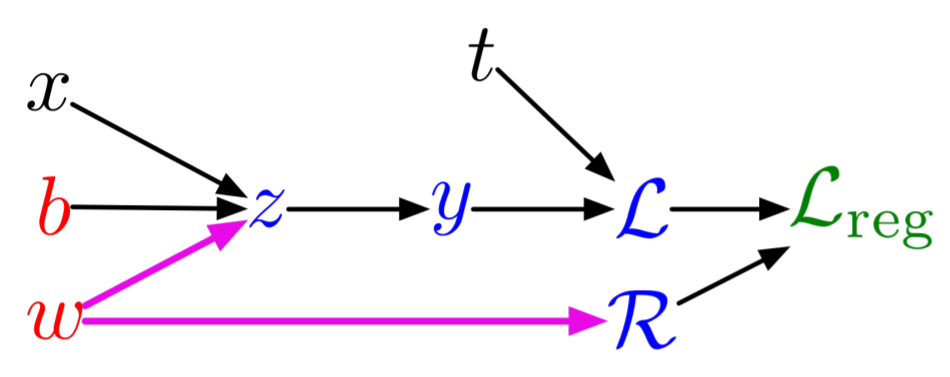
Now, let's calculate the derivatives going backwards through the graph.
\begin{align}
\overline{\mathcal{L}}_{reg} &:= \frac{d\mathcal{L}_{reg}}{d\mathcal{L}_{reg}} = 1 \\
\overline{\mathcal{R}} &= \frac{d\mathcal{L}_{reg}}{d\mathcal{L}_{reg}}\frac{d\mathcal{L}_{reg}}{d \mathcal{R}} =\overline{\mathcal{L}}_{reg}\cdot \lambda \\
\overline{\mathcal{L}} &= \overline{\mathcal{L}}_{reg}\frac{d\mathcal{L}_{reg}}{d\mathcal{L}} = \overline{\mathcal{L}}_{reg}\cdot 1 \\
\overline{y} &= \overline{\mathcal{L}}\frac{d\mathcal{L}}{dy} = \overline{\mathcal{L}}(y-t) \\
\overline{z} &= \overline{y}\frac{dy}{dz} = \overline{y}\sigma'(z) \\
\overline{w} &= \overline{z}\frac{\partial z}{\partial w} + \overline{\mathcal{R}}\frac{d\mathcal{R}}{dw} = \overline{z}x + \overline{\mathcal{R}}w \\
\overline{b} &= \overline{z}\frac{\partial z}{\partial b} = \overline{z}
\end{align}
Summary
First we pass our values (here \(x\)) through the model to get a prediction (here \(y\) with loss function values \(\mathcal{L}_{reg}\) )
To optimize the model parameters w.r.t. the loss function, we now start at the end and calculate derivatives going from the output backwards towards the input).
This is called Reverse Mode AD or backpropagation.
For large models with many parameters and many nested functions, this methods is more efficient because we don't have to drage the derivatives through every step of the model on the forward pass when we apply the model to data
There are two ways to implement this approach: the static graph (used by TensorFlow) and gradient tape (used by Pytorch, Julia, everyone else).
Example 2: Simple Neural Network
$$z_i = \sum_j w_{ij}^1x_j + b_i^1 $$
$$h_i = \sigma(z_i)$$
$$y_i = \sum_j w_{ij}^2h_j + b_i^2 $$
$$\mathcal{L} = \frac{1}{2}\sum_k(y_k-t_k)^2 $$
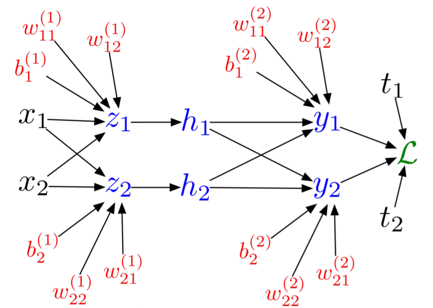
Index Form
\begin{align}
\overline{\mathcal{L}} &= 1\\
\overline{y_i} &= \overline{\mathcal{L}}(y_i-t_i) \\
\overline{w_{ij}^2} &= \overline{y_i}h_j \\
\overline{b_i^2} &= \overline{y_i} \\
\overline{h_i} &= \sum_k(\overline{y}_k w_{ki}^2)\\
\overline{z_i} &= \overline{h_i}\sigma'(z_i) \\
\overline{w_{ij}^1} &= \overline{z_i}x_j \\
\overline{b_i^1} &= \overline{z_i}
\end{align}
Matrix Form
\begin{align}
\overline{\mathcal{L}} &= 1 \\
\overline{y} &= \overline{\mathcal{L}}(\vec{y}-\vec{t}\;) \\
\overline{W_2} &= \overline{y}\left(\vec{h}^T\right) \\
\overline{b_2} &= \overline{y} \\
\overline{h} &= W_2^T\overline{y}\\
\overline{z} &= \overline{y}\; .* \; \sigma'(\vec{z}) \\
\overline{W_1} &= \overline{z}\left(\vec{x}^T\right) \\
\overline{b_1} &= \overline{z}
\end{align}
The rule is multiply by Matrix on forward pass and by Matrix-Transpose on backwards pass.
Computational Graph
This is great, but it requires that we create a new set of data structures in our code that can track the propagation of derivatives.
i.e. your tf.Tensor in TensorFlow and your torch.Tensor in PyTorch.
This is annoying. Why can't we just use numpy arrays?
Further, it means our machine learning library can't compose with other packages (e.g. SciPy) since we can't track derivatives through them.
Differentiable Programming and the Julia Language
Differentiable Programming (\(\partial P\))
A key feature of Julia is its abstract type system
This let's you write generic functions that dispatch to whatever data type you have
Further, this means packages are composable out of the box.
The AD package for Julia (currently Zygote.jl) has been implemented language wide meaning you can differentiate through almost any generic Julia Code!
Examples:
Measurements.jl -- numerical types for tracking uncertainties
Unitful.jl -- numerical types for tracking units
Flux.jl -- deep learning package
These are all excellent packages and compose with one another out of the box!
Example: Hand Written Sine Function
We implement a (bad) version of the sine function via its Taylor Series
$$ \sin(x) = x -\frac{x^3}{3!} + \frac{x^5}{5!} - \dots $$
This implementation has a for loop
it even has if statements!
Julia differentiaties right through!
Both forward-mode AD and reverse-mode AD give us machine precision
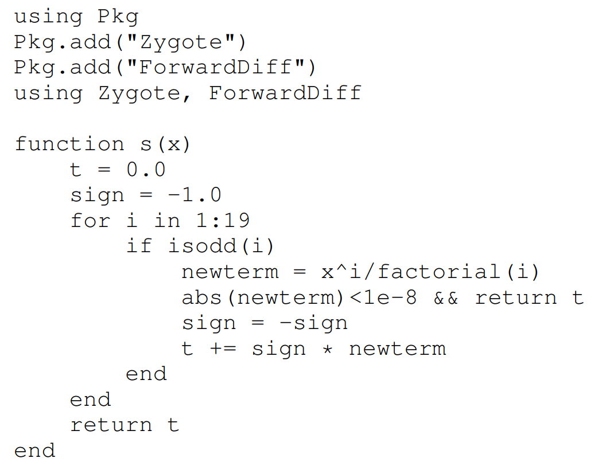
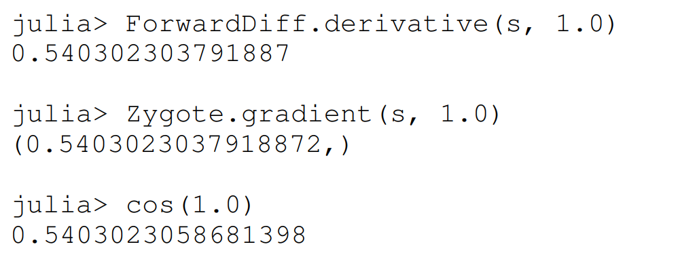
If we can define the adjoint (like the transpose of a matrix) then we can compute gradients and optimize!
Application: Reverse-mode AD of ODE Solutions
See this excellent paper
Suppose we want to optimize some function \(L\) that depends on the result of an ODE solver, i.e.
\begin{align}
L(z(t_1)) &:= L\left(z(t_0) + \int_{t_0}^{t_1}f(z(t),t, \theta) dt \right)\\
&= L\left(\text{ODESolve}(z(t_0), f, t_0, t_1, \theta) \right)
\end{align}
We can derive an adjoint ODE via the method of Lagrange multipliers (see paper for details) solved in reverse time so that:
\begin{align}
a(t) &= \frac{\partial L}{\partial z(t)} \\
\frac{dL}{d\theta} &= -\int_{t_1}^{t_0} a(t) \frac{\partial f}{\partial \theta} dt
\end{align}
This allows us to perform forward pass to integrate the ODE and then pass the gradients backwards through the adjoint ODE! \(dL/d\theta\) can be obtained easily by automatic differentiation since \(f\) is given.
We can now use any standard optimization scheme to fit an ordinary differential equation to an arbitrary Loss function (such as \(\ell_2\)-norm between our integrated result and data. See this awesome post for a detailed discussion of the Julia implementation.
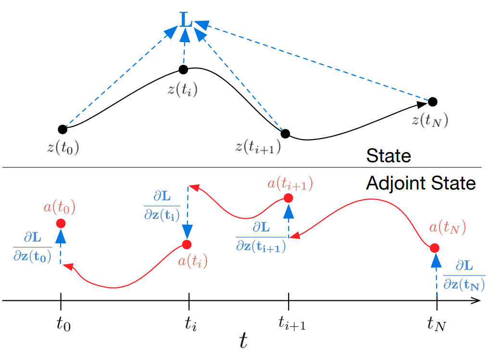
Given we can now differentiate any code we write, how can we combine our scientific knowledge with machine learning methods to acheive better models?
Scientific Machine Learning
It can be hard to tell what Machine Learning actually is.
Just like quantum woo in physics, there is a lot of machine learning woo. Compare:
Primer: What is a Neural Network anyways?
A Neural Network is just a function made up of many composed functions
The simplest example is the Multi-Layer Perceptron which looks like this:
Each layer is of the form \( L_i(\vec{x}) = \sigma_i \left(\mathbf{W}_i \vec{x} + \vec{b}_i \right) \)
so that an MLP with \(n\) layers can be written as
$$NN(\vec{x}) = L_n\circ L_{n-1}\circ L_{n-2}\circ \dots \circ L_{2}\circ L_1(\vec{x}) $$
\(\mathbf{W}_i\) are the weight matrices, \(\vec{b}_i\) are the bias vectors, and \(\sigma_i\) are the nonlinear activation functions (e.g. \(\tanh\) ).
Since we can now use AD, we can optimize the weights and biases to make our NN fit any function we want
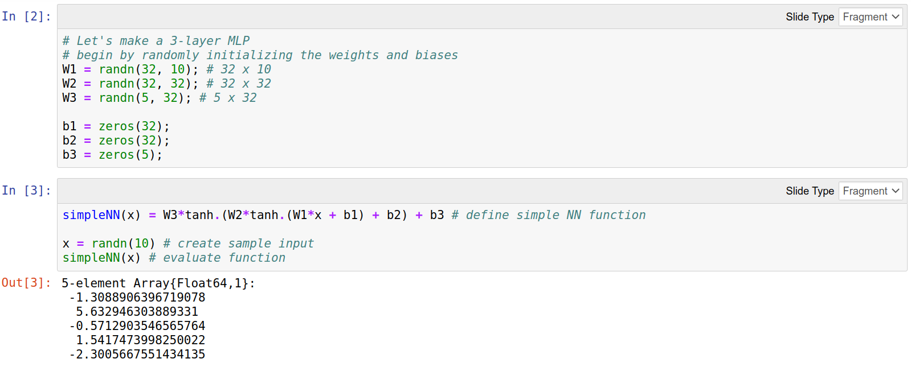
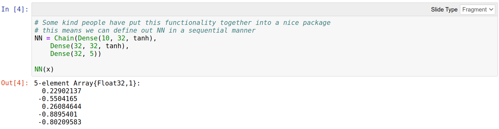
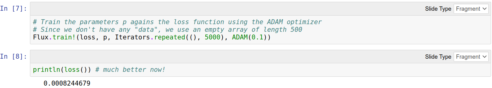
In this form, our machine learning approach is a black box.
How can we incorporate our physics knowledge into these models to make them better?
In other words: Let's not throw away information someone already painstakingly collected experimentally/theoretically.
Method 1: Physics Informed Neural Network
Consider a driven spring system: \( x'' = -kx + 0.1\sin(x) \)
Imagine we don't know the r.h.s of above and we only have 4 badly sampled points.
Can we predict the force and thereby predict the motion?
Naively, we may try to predict the force directly via optimizing a loss function like:
\( L(p) = \sum_i\left( NN(x(t_i), v(t_i), t_i)-F(x(t_i),v(t_i),t_i) \right)^2 \)
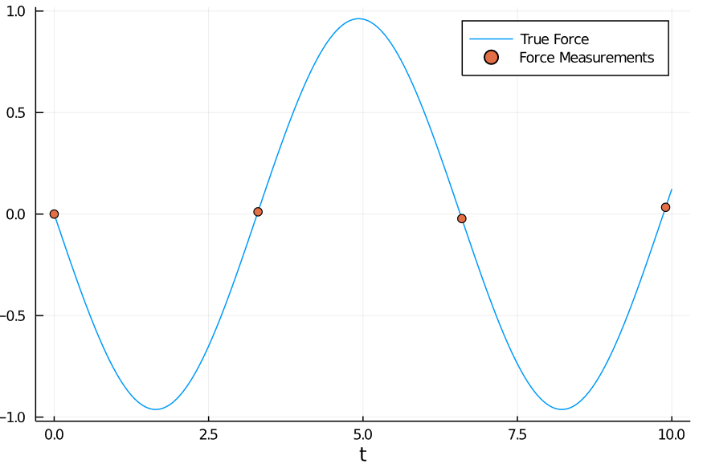
Our poorly sampled data leads to a fit with the the right general shape, but doesn't capture the extreme behavior.
As physicists we know that Hooke's Law, \(F_{\text{spring}} = -kx \) captures the behavior of a spring-mass system.
Further, the spring constant \(k\) is a commonly measured parameter for many systems.
Right now we do not include any of this information in our NN model.
What if someone told us that \(k=0.1\)? Could we make a better model?
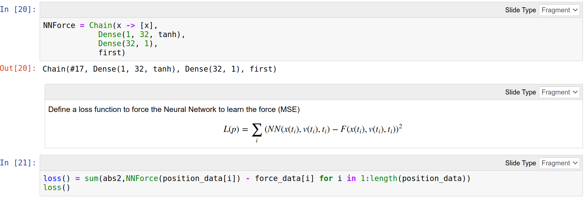
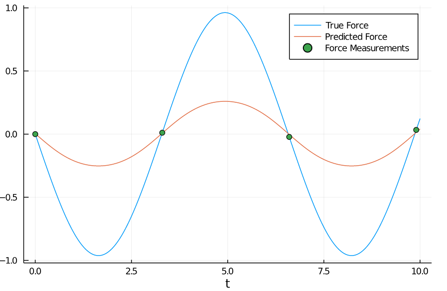
Solution:Add physics regularization term to loss function
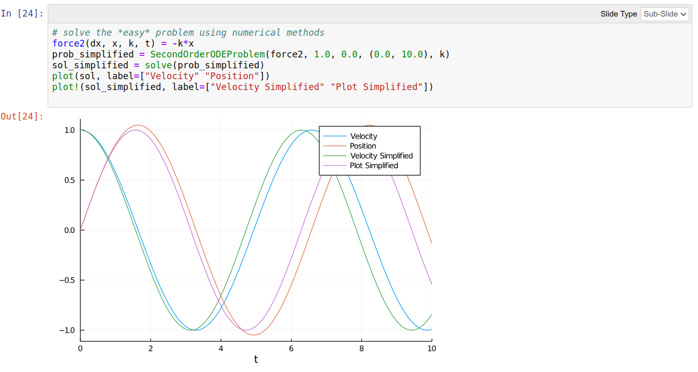
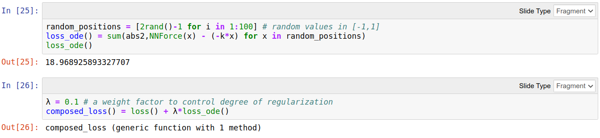
Now we can control the strength of our physics model by tweaking \(\lambda\)
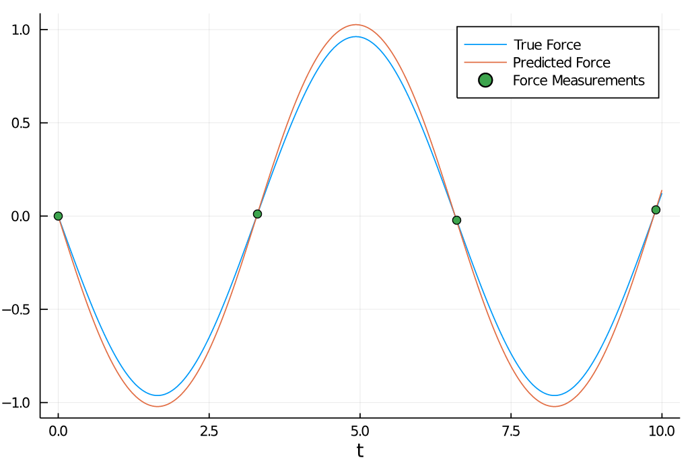
Method 2: Neural ODEs
We know we can track gradients through ODE solvers
Can we fit an ODE to time-series data using a NN?
i.e. $$ y'(x) = NN(x) $$
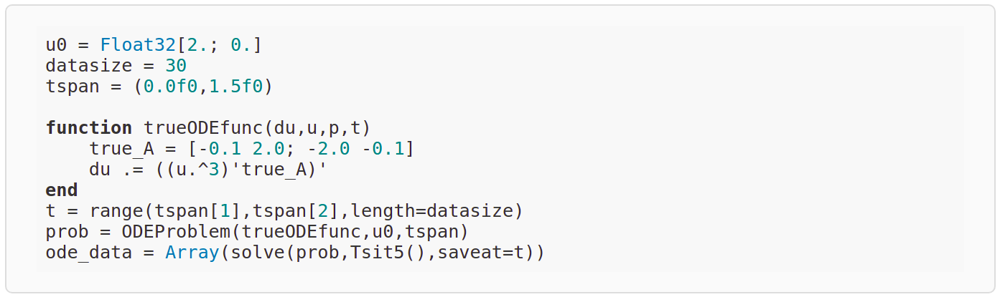
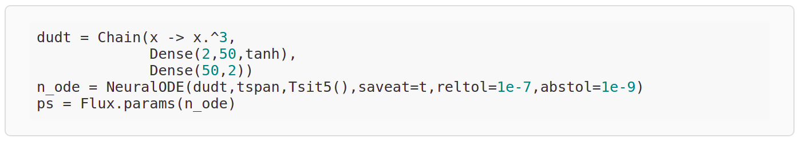
Pre-training result
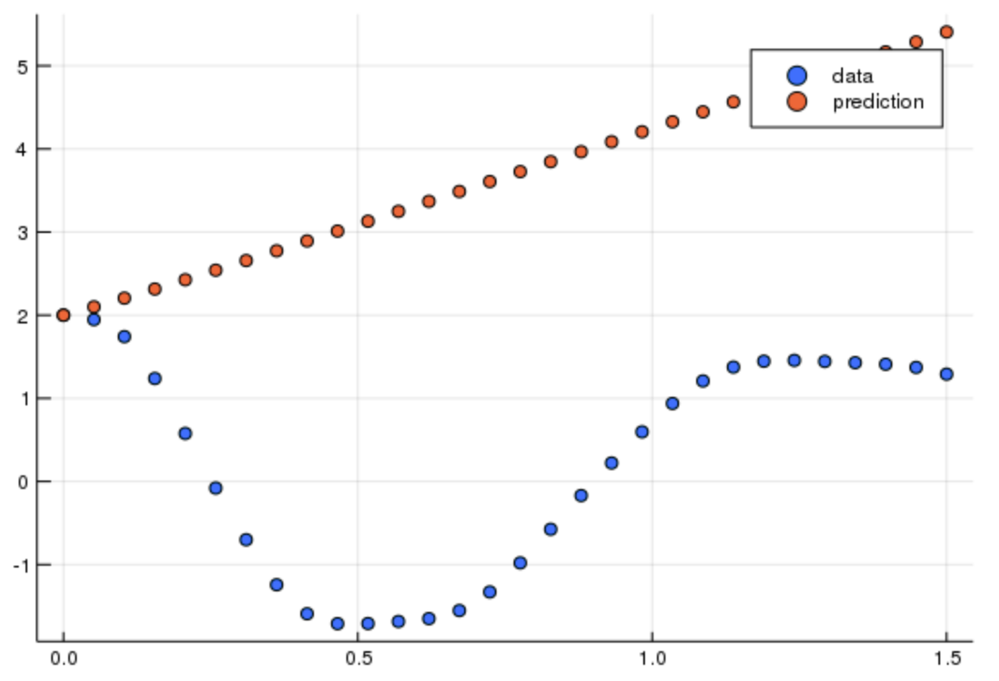
Learning the ODE system
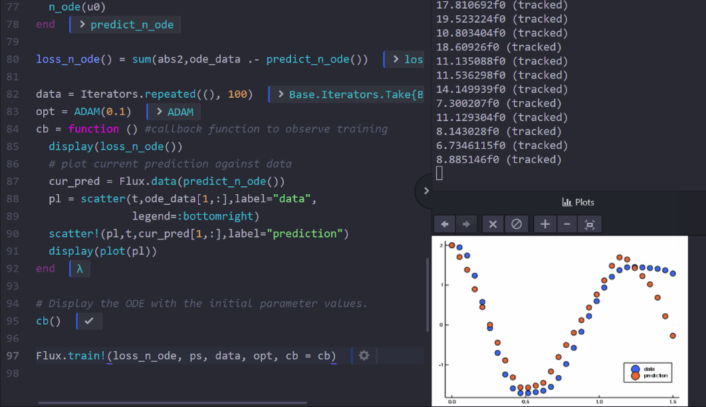
Method 3: Universal Differential Equations
Checkout this awesome paper
Consider the Lotka-Volterra predator-prey model
\begin{align}
\dot{x} &= \alpha x - \beta xy \\
\dot{y} &= \gamma xy - \delta y
\end{align}
Suppose a clever scientist has already (by some other means) evaluated the prey birth rate \(\alpha\) and the predator death rate \(\delta\)
Can we fit NN to learn only the missing terms?
\begin{align}
\dot{x} &= \alpha x + NN_1(x,y;p_1) \\
\dot{y} &= -\delta y + NN_2(x, y; p_2)
\end{align}
Training Data
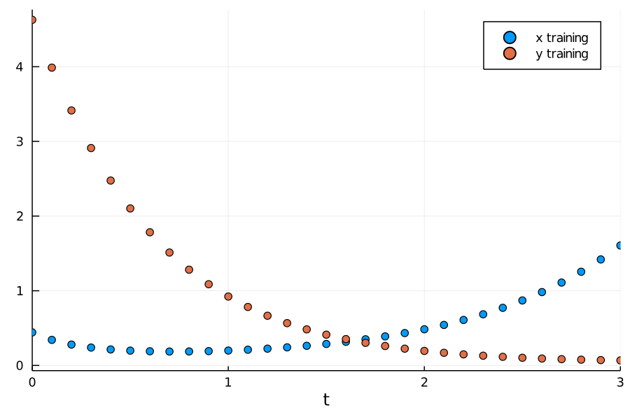
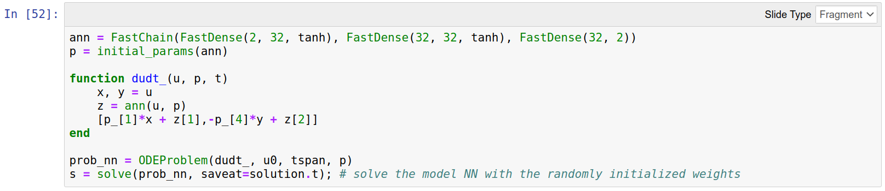
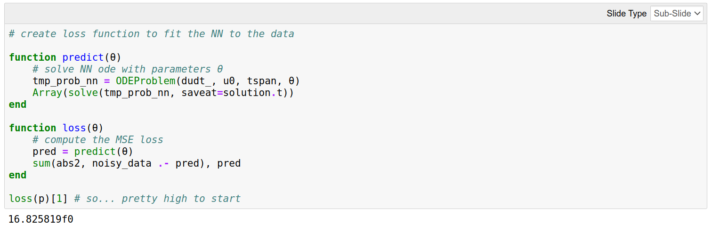
Pre-training Fit
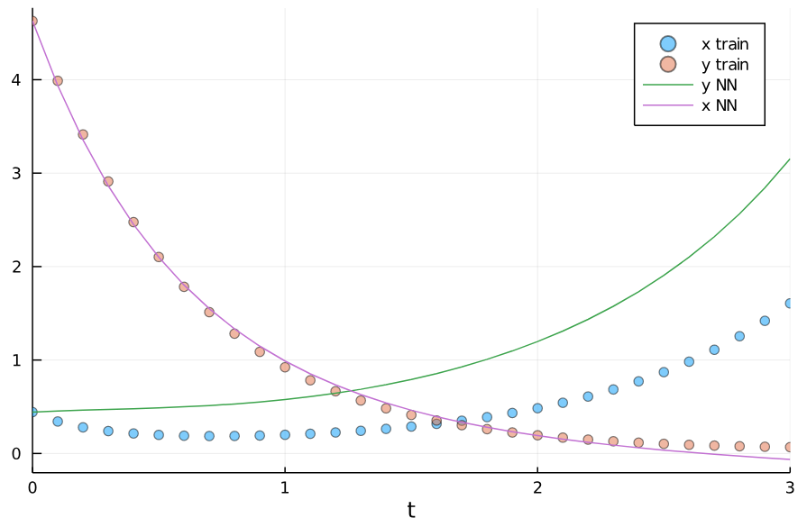
It gets better
Now that we have learned the missing terms, we extract their functional form
SINDy: Sparse Identification of Nonlinear Dynamics
Create a basis set of combinations of our variables (here \(x\) and \(y\))
Perform a sparse regression (i.e. that minimizes weights) by taking linear combination of basis terms.
Result: We correctly infer that the missing terms are ofthe form \(xy\) in the first equations and \(xy\) in the second equation.
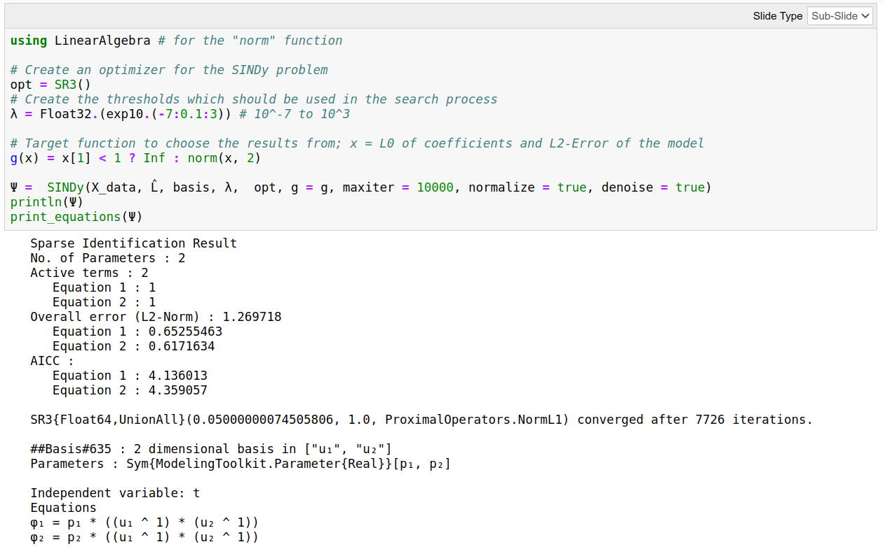
Now that we have a functional form, we can do a new fit to get the coefficients right.
The result is a deterministic model that has insane generalizability!
Post-SINDy Extrapolation
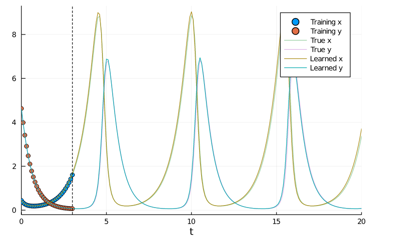
Have I just put all of us out of business?
Probably not, but this is still pretty cool.
Method 4: Hamiltonian Neural Networks
Checkout this awesome paper
Recall Hamilton's Equations:
\begin{align}
\dot{q} &= \frac{dH}{dp} & \dot{p} &= -\frac{\partial H}{\partial q}
\end{align}
Suppose we have sampled some time series so that we have some data for \(q\) and \(p\).
If we want to predcit the Hamiltonian function \(H\), we could directly train a Neural Network.
A different (better) approach is to utilize our AD system to train the output of the NN to obey Hamilton's equations, i.e.
\( L_{\text{HNN}} = \left\Vert \frac{\partial H}{\partial p} - \frac{\partial q}{\partial t} \right\Vert_2 + \left\Vert \frac{\partial H}{\partial q}+ \frac{\partial p}{\partial t} \right\Vert_2 \)
Three Sample Problems: Ideal Spring, Ideal Pendulum, Real Pendulum
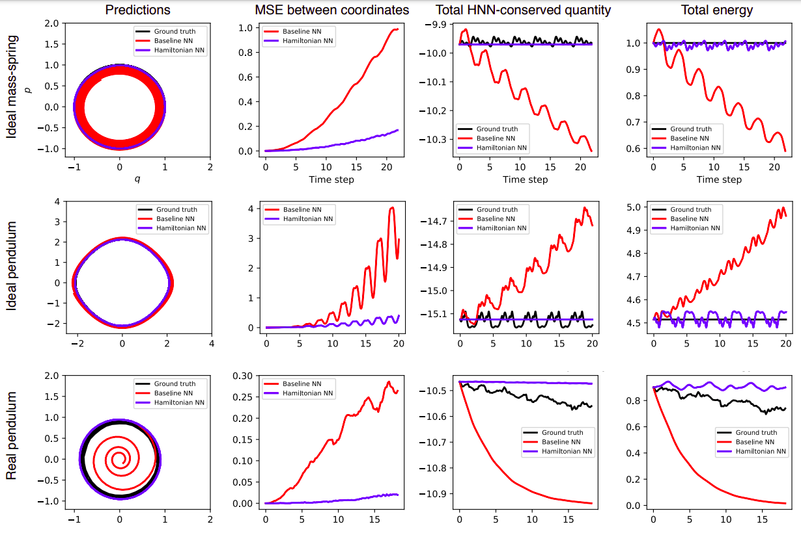
Because we have learned a representation for \(H\) we solve the same system for any initial energy by adding a constant shift to \(H\) and proceeding!
If you don't have \(q\) and \(p\) directly, that's okay.
Have your NN learn internal representations of \(q\) and \(p\) and then output \(H\) from those.
Example: learning physics from video
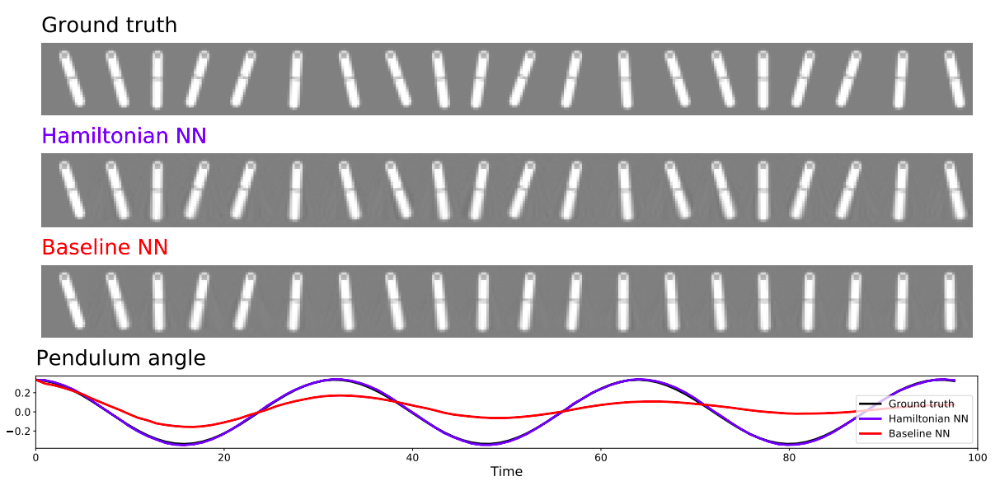
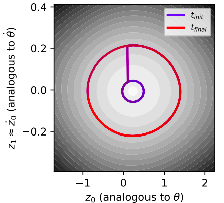
This is super easy in Julia